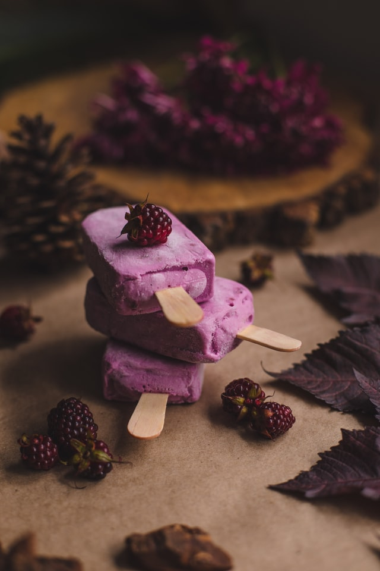

Indians are known for their unique taste and experimental behavior when it comes to food. Many Indian desserts are fried foods made with sugar, milk or condensed milk. Ingredients and preferred types of dessert vary by region. In the eastern part of India, for example, most are based on milk products.
Many are flavoured with almonds and pistachios, spiced with cardamon, nutmeg, cloves and black pepper, and decorated with nuts, or with gold or silver leaf
